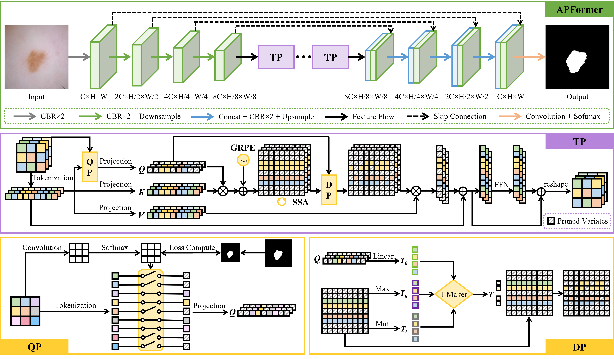

Xian LinPhD StudentMedical Image Analysis via Machine Intelligence Group (MIAMI),School of Electronic Information and Communications (EIC), Huazhong University of Science and Technology (HUST), Multimedia and Communication Network Center (MCNC), HUST
|
|


Biography
I am currently a first-year PhD student in the School of Electronic Information and Communications (EIC), Huazhong University of Science and Technology (HUST) under the supervision of Prof. Li Yu and Prof. Zengqiang Yan. I received my B.E. degree from College of Physical Science and Technology, Central China Normal University in 2020.
My research interest lies in medical image analysis and efficient transformer.
News
2021. 02. One paper has been accepted by IEEE Transactions on Medical Imaging (IF: 11.037).
2023. 04. One paper has been accepted by IEEE Journal of Biomedical and Health Informatics (IF: 7.021).
Selected Publications
|  | The Lighter The Better: Rethinking Transformers in Medical Image Segmentation Through Adaptive Pruning Xian Lin, Li Yu, Kwang-Ting Cheng, Zengqiang Yan. IEEE Transactions on Medical Imaging (TMI), 2023. |

|
BATFormer: Towards Boundary-Aware Lightweight Transformer for Efficient Medical Image Segmentation Xian Lin, Li Yu, Kwang-Ting Cheng, Zengqiang Yan. IEEE Journal of Biomedical and Health Informatics (JBHI), 2023. |
© Xian Lin | Last updated: April 2023